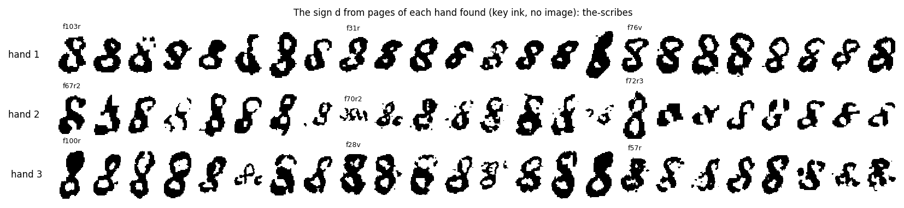

How many scribes wrote the Voynich manuscript? People have counted two (Grant), five (Davis) and up to a dozen (Currier), each by eye. Here every letter the tracing has keyed is measured from its own ink, against its line's height: size, slant, pen width and shape. The pages are then grouped with no hand named to them. A grouping counts only if a page's upper and lower halves, measured apart, land in the same group on at least 95% of pages.
How steady each count of hands is
The two hands
The sign d from three pages of each group (drawn from the key's own ink). The third row is the zodiac labels, whose letters stand on painted ground, so their ink comes out broken:

Every proposal set beside the groups
Agreement is the adjusted Rand index: 1 is the same grouping, 0 is no better than chance.
The pages the proposals disagree on
The later hands
The folio numbers, quire marks, month names, f116v's German lines, f49v's numerals and a colour word, each boxed on the Yale image, with the ink found inside. Darkness is the ink's gray over the parchment's (lower is darker). The text's own letters measure 0.70.